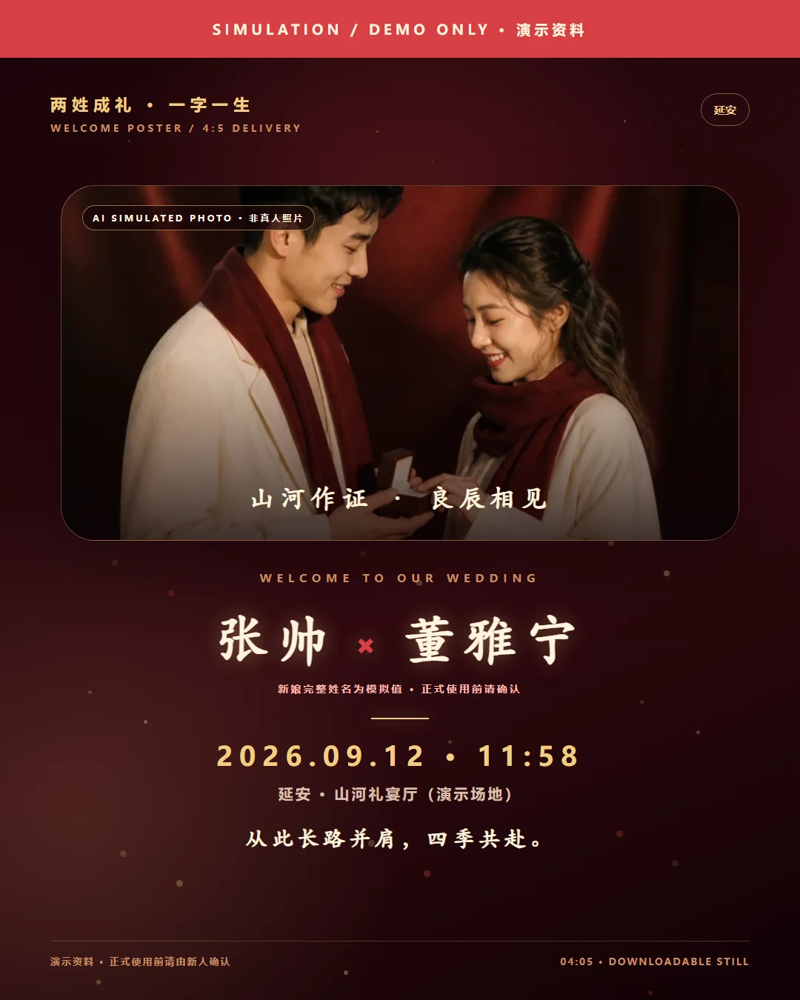

一字一条完整成片
逐笔书写、部件拆分、旁白、字幕、背景音和 9:16 MP4 已经跑通。
查看能力边界 →已实际安装、生成并渲染
这是一个可运行的汉字竖屏视频样片：读取真实笔画路径，拆分字形部件，用 TTS 决定字幕和总时长，最后由 Remotion 渲染成 MP4。
库理解总览
它的价值不只是“按笔画写字”，而是把真实笔画、部件表达、声音时间轴和确定性渲染组合成一条汉字视觉内容生产链。
逐笔书写、部件拆分、旁白、字幕、背景音和 9:16 MP4 已经跑通。
查看能力边界 →strokes 提供轮廓，medians 提供中心线，Remotion 逐帧合成。
把笔画转成个性化、情绪价值和纪念仪式，是普通用户更容易理解、分享和付费的形态。
试做一份姓名祝福 →可以扩展教学标注、材质、部件动画、字族比较、跟写界面和多画幅。
观看六段效果 →先验证分享与付费，再用内容工作台、姓名字库和渲染队列提升交付效率。
查看产品路线 →技术最贴合场景 / 汉字文化短视频栏目
它已经直接输出带声音、字幕和视觉故事的 9:16 MP4，因此系列化汉字内容仍是最贴合底层技术的场景；若目标是用户分享和付费，后面的姓名祝福产品更有优势。
6 笔，人工指定前 3 笔属于竖心旁。
重新配置目标字形、缩放和位置。
分段生成旁白，音频真实时长为 12.72 秒。
证明笔画逻辑与表现层可以分开设计。
01 / 能力边界
把“仓库介绍”与“实际运行结果”分开看，结论会更准确。
核心原理
动画不是录屏，而是每一帧由代码计算。真正的结构数据和创意表达各司其职。
轮廓负责字形，中心线负责“写到哪里”。
用 dashoffset 扫过中心线，再裁剪到真实笔画形状。
让不同部件平移，并交叉淡化成独立汉字。
生成字幕 JSON，并把真实音频长度转换为总帧数。
02 / 使用场景演示
选择一个场景，查看它需要什么输入、能产出什么，以及目前还缺什么。网页预览用于说明产品形态，媒体按钮会直接播放从现有演示片裁出的对应证据短片。
场景 01
把一个汉字、四句脚本、逐笔动画、趣味拆分、旁白和字幕组合成可直接发布的竖屏内容。
当前示例对应我们的“忙”字真实成片。
心有所向，虽忙不茫。
演示边界：这是现有“忙”字真实成片的网页缩略表达；趣味拆字仍需明确标注，不等于历史字源。
一字一条，适合视频号、抖音、小红书和课程预热。
已有真实成片组合笔顺、拼音、结构标注和听说内容。
已有视觉效果将姓名或品牌字包装成个性祝福卡和开场片。
视觉概念把结构动画用于展项、出版物二维码和轻科普。
需要来源审核比较清、情、晴、请等共享部件，形成系列课。
已有视觉效果从示范路径延伸到用户笔迹、偏差和纠错反馈。
界面概念03 / 最小内容工作台
网页负责配置和即时预览；同一份 JSON 目录也被独立 Remotion Composition 读取。右侧“明”字视频是配置驱动的真实成片，不是网页预览录屏。
结构动画先给出可见关系，解释必须带来源。
明 · exhibit · museum · #ff735f
能力边界：这里可以编辑和导出配置，但静态网页不能直接运行 Remotion。真实 MP4 仍需在本地或未来的渲染服务中生成。
04 / 落地产品 · 姓名祝福生成器
输入姓名、选择祝福场景和视觉风格，编辑一句只属于对方的话。网页给出即时预览，右侧“沐阳”视频验证双字逐笔与绚丽成片。
沐阳 · birthday · aurora · #f6d47a
诚实边界：即时预览用网页字体表达任意 2–4 字姓名；右侧真实视频才使用“沐、阳”的逐笔路径。目录外姓名要补齐笔画数据与多字布局后才能真实渲染。
一份有姓名、有日期、有专属文案的数字纪念礼物。
两个人的名字逐笔出现、交汇，成为请柬和大屏开场。
教师、社群和企业可用名单批量生成不同名字的祝福。
把品牌名、开业日期和视觉色组合成可复用的发布开场。
CASE 01 / 延安婚礼视觉项目
“张／董”用真实笔画入场，红线完成相遇，完整展示名、婚期和延安共同形成主视觉。先验证微信请帖，再复用到婚礼大屏与迎宾屏。
配置加载后即可体验完整分镜。
信息边界：上方基础案例只使用用户提供的“张帅、董小姐、9 月 12 日、延安”。下方完整交付包中的姓名、场地、时间、故事和联系方式均为醒目标注的模拟资料。
暖砂山形与一束金光先建立地点和时间，让宾客进入这段故事。
从此长路并肩，四季共赴。
竖版样片用于微信分享；同一份配置可以进一步渲染 16:9 酒店大屏。红线相遇是视觉叙事，不作为汉字字源解释。
16:9 横版，强化双方姓名、婚期和仪式倒计时；适合酒店 LED 与开场转场。
已补全：25 秒 1920 × 1080 真实成片9:16 竖版，当前真实样片已经覆盖；继续加入故事照片、导航信息与 RSVP。
已补全：可替换资料与本地回执交互4:5 海报定格，并可批量生成宾客姓名感谢短片，形成婚后数字回礼。
已补全：1080 × 1350 可下载海报以下内容模拟了一次从线上邀请、现场大屏到迎宾海报的完整交付。它用于验证产品形态，不代表新人的真实姓名、经历或婚礼安排。
新娘完整姓名为模拟值
在朋友的秋日聚会里相遇。此段为演示故事，请替换为真实经历。
从一次同行，走成许多次共同决定。此段为演示故事。
在延安，把往后的四季写进同一天。日期来自当前演示假设。
1080 × 1350 静态交付，文件内也保留模拟资料标识。

只在当前页面生成确认结果，不联网、不发送、不保存。
先生成身份锚点，再延展同行与约定，最后把同一视觉系统消费到动态请帖、横版大屏和 4:5 迎宾海报。素材只验证生产方法，不用于代替新人授权照片。
身份与色彩锚点：暖白服装、酒红围巾、延安风格山谷。
下载源图 PNG连续性测试：保持人物、服装和色彩，改变机位与叙事动作。
下载源图 PNG仪式高潮测试：酒红背景与戒指细节适配请帖收束和迎宾海报。
下载源图 PNG先确定完全虚构的成年人物，再用参考图约束后两张，降低三张照片像三个项目的割裂感。
同一批图片进入网页请帖、1920×1080 大屏片与 1080×1350 迎宾海报，减少重复制作。
图片、配置、成片和下载素材同时标注模拟身份；正式版必须替换新人授权照片。
笔画形成独特开场，照片承担情绪故事，三端成品和现场保障才组成完整服务。
05 / 扩展效果实验室
我们又渲染了一条 31.59 秒的综合实验片，把可直接实现的表现效果和仍需产品化的方向放在同一条时间轴里。
互动识别、透明导出和批量生产仍只是界面或输出概念，视频中已用红色“概念验证”明确标注。
田字格、笔画编号、当前笔高亮和方向光标。
同一“永”字路径切换墨迹、粉笔和霓虹表现层。
“明”的日、月分色拆开，再以缓动磁吸组合。
清、情、晴、请共享青声旁，不同形旁分色比较。
六段小晓旁白、逐段字幕和程序化背景音乐同步。
演示路径跟随和反馈界面；尚无真实笔迹输入与识别。
演示 9:16、16:9 和透明素材形态；尚无批量导出队列。
需要可靠古文字数据、来源版本和专家审核后再做。
06 / 技术扩展
优先解决重复劳动，再解决规模和视觉丰富度。
将汉字、旁白、字幕、笔画分组、布局、配色和音色提取为 JSON Schema。
整合拆字数据，自动计算部件包围盒和建议布局，同时保留人工覆盖。
支持表格导入、音频缓存、并行渲染、失败重试、多画幅和封面输出。
增加字源来源、文案审核、音量标准、缺失素材检查和视觉回归测试。
07 / 可扩展产品方向
同一技术内核可以长成五类产品；本次已经把“姓名祝福”从方向清单推进为可操作 MVP。
输入姓名、纪念日和一句祝福，选择绚丽风格，生成可赠送、可分享的专属视频。
选字、写文案、预览拆分、调节音色与模板，为单次订单和名单批量出片提供生产能力。
把视频时间轴变成交互时间轴，支持跟写、笔顺纠错、部件拼合和课堂投屏。
向教育 App、内容平台和营销系统提供 SVG 动画、透明视频或完整 MP4。
沉淀笔画、部件、字源、常见误解、趣味联想和可视化脚本，并保留来源链。
真正的护城河
08 / 对我们的意义
普通用户购买的不是笔画技术，而是个性化、情绪价值和仪式感；真正的长期壁垒仍来自字符覆盖、模板质量、渲染成功率和使用反馈。
用生日、婚礼、新生和品牌纪念验证配置完成率、重播率、分享意愿和付费意愿。
积累高频姓名字路径、多字布局、授权模板，并接入真实渲染任务和批量名单。
当前没有支付、订单、隐私存储、长尾字覆盖、批量任务、课程体系或生产级 QA。
实验依据
本页对应固定上游提交、我们的六个补充视频 Composition、一个迎宾 Still 与三张 AI 虚构人物故事素材，已在 Windows 环境完成依赖安装、Edge TTS、类型检查、Remotion 渲染、ffprobe 检查和二十四份视觉证据。
53e69d14aff1{kind=link}
{kind=link}
{kind=link}
{kind=link}